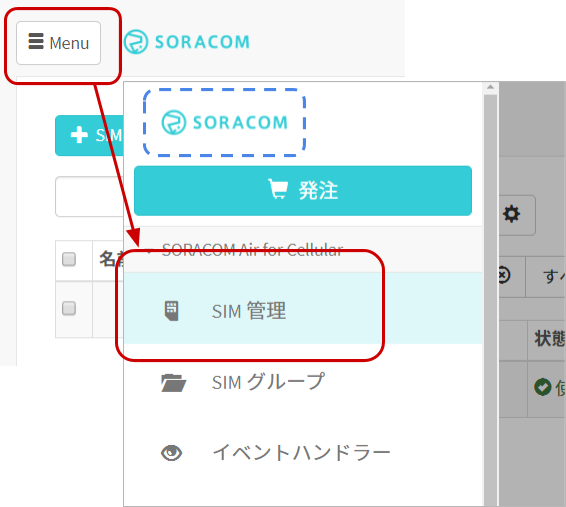
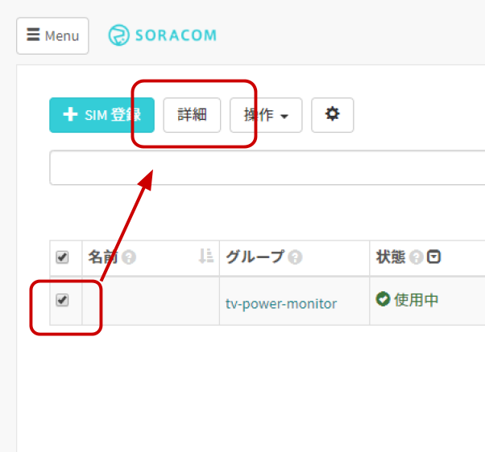
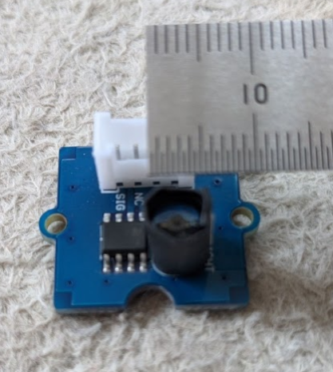

レシピ難易度：★★★★☆
光センサーを活用して「テレビの ON/OFF が確認できるデバイス」を作り、長時間のテレビのつけっぱなしを知る、そしてアラートをする仕組みを作ります。センサーを制御するマイコンには LTE モデム搭載済みプロトタイプ向けデバイス Wio LTE JP Version を使い、どのような場所からでもクラウド通信できるデバイスとして作り上げます。
本レシピを行うのに必要な時間、概算費用
本レシピは以下の通りです。
- 必要な時間: 約2時間
- 概算費用: 約16,500円
※ 概算費用: ハードウェアや SORACOM を始めとした各種サービスの概ねの費用 (税や送料などの付帯費用や無料枠適用は考慮しないものとしています)
このコンテンツの進め方
ページの内容を読み、また作業を行ったら右下の［Next］を押して次のステップへ進みます。また、［Back］を使って戻ったり、左のナビゲーションメニューでもページの移動が可能です。
左上の［×］を押してコンテンツを終了することができます。また、ページを開きなおすことで再開できます。ページのアドレスはブラウザの［履歴］メニューを利用してください。
本レシピを行うためには以下のものをご用意ください。
ハードウェア
品名 | 数量 | 価格 | 購入先 | 備考 |
Grove IoT スターターキット for SORACOM(Wio LTE JP Version) | 1 | 15,980円 | キットの中には以下のものが含まれています。(それぞれを個別に準備しても構いません)
| |
Grove 光センサーモジュール (v1.2) | 1 | 440円 | ― | |
開発用パソコン | 1 | ― | ― |
|
(必要な方のみ) USB 変換アダプタ | ― | ― | ― | Wio LTE とパソコンを USB ケーブルで接続する際に利用します。 パソコンに USB Type-A ポートがない場合はご用意ください。 1A 以上の電力が供給できるものを利用してください。(USB 3.0以上に対応していれば概ね安心です) |
※1 ※ 金額はレシピ作成時となります。ソラコムで販売している金額は税抜き・送料別です。
その他必要なもの
必要なもの | 費用 | 作成方法など |
SORACOM アカウント | 無料※ |
※ アカウント作成・維持の費用の料金です。
Wio LTE JP Version 設置用部材
本レシピ内では Wio LTE JP Version とGrove 超音波距離センサーモジュールを設置するための部材を紹介しています。ここに記載されているものは任意であり、特に準備をせずともレシピ自体は進めることができます。
品名 | 数量 | 購入先 | 備考 |
黒紙 | 1 | ― | 光センサーの周りを囲い、環境光が入らないようにします。 コピー用紙を黒ペンで塗りつぶしたものでも構いませんが、紙は厚めが望ましいです。 サイズは3cm四方もあれば問題ないでしょう。 |
養生テープ等の幅広の物 | ― | 光センサーをテレビに取り付ける際に利用しました。 | |
電源用 microUSB ケーブル、および AC アダプタ | 1 | ― | 開発に使用するケーブルとは別に、テレビに取り付けて運用する際に別途準備ください。 長めの Grove ケーブルを用意しても可です。 |
光センサーと Wio LTE JP Version (以下 Wio LTE) のみで、まずは動作を確認してみます。
事前の確認
開発用パソコンに下の準備が整っているか確認します。整っていない場合は、先にセットアップを済ませてから、作業を続けることになります。
- Arduino IDE のセットアップ (済んでいない場合は Windows 編 もしくは macOS 編の作業を行ってください。約20分の作業です。)
- Wio LTE 開発環境のセットアップ (済んでいない場合は Windows 編 もしくは macOS 編の作業を行ってください。約70分の作業です。)
Wio LTE に光センサーモジュールを接続する
外観は以下の通りです。
光センサーモジュール | |
Wio LTE |
|

Wio LTE の接続先は A6 です。ボード上に "A6" と書いてあるのを確認したうえで、接続してください。(D38 ではありません、ご注意ください。)
ライブラリのインストール
必要なライブラリをインストールします。光センサー自体は標準関数 (analogRead()) で動作しますが、設定情報のやり取りやクラウドとの通信に使用する JSON を容易に扱えるライブラリ ArduinoJson を使用します。
［スケッチ］>［ライブラリをインクルード］>［ライブラリを管理...］をクリックします

※ 画面は macOS ですが、Windows も同様です。
"ArduinoJson" をインストールする
ライブラリマネージャの一覧から ArduinoJson (by Benoit Blanchon) を選んで［インストール］をクリックします。
バージョンはインストール時における最新バージョンを選んでください。
インストールが終了したら［閉じる］をクリックします。
光センサーの動作を確認するスケッチ
Arduino IDE を起動し［ファイル］>［新規ファイル］を開くと void setup() { から始まる「空のスケッチ」が表示されます。
一度スケッチの内容を削除してから、後述のスケッチで置き換えてください。
lets_try_iot_grove_light_local.ino
/* See: https://www.lp.soracom.jp/202005-online-seminar/ */
/*
* TV power monitor (using Light sensor) / Local sensing only version
*
* Copyright (c) 2020 SORACOM, INC.
* Released under the MIT license
* https://opensource.org/licenses/mit-license.php
*/
#include <WioLTEforArduino.h>
WioLTE Wio;
#define console SerialUSB
#include <ArduinoJson.h>
/* global vals for dynamic config by SORACOM Air metadata */
int TV_OFF_THRESHOLD;
int TV_ON_DARK_THRESHOLD;
int TV_ON_BRIGHT_THRESHOLD;
int SAMPLING_COUNT;
int SENSING_INTERVAL_MS;
void setup() {
delay(3000);
console.println("");
console.println("--- START ---");
Wio.Init();
Wio.PowerSupplyGrove(true);
/* set for light sensor */
pinMode(WIOLTE_A6, INPUT_ANALOG);
/* set for device config */
String json = "{\"TV_OFF_THRESHOLD\": 4, \"TV_ON_DARK_THRESHOLD\": 30, \"TV_ON_BRIGHT_THRESHOLD\": 200, \"SENSING_INTERVAL_MS\": 1000, \"SAMPLING_COUNT\": 1}";
console.println(json);
const size_t capacity = JSON_OBJECT_SIZE(5) + 110; // Code generate by https://arduinojson.org/v6/assistant/
DynamicJsonDocument doc(capacity);
deserializeJson(doc, json); // NOTE: Need error handling
/* read from JSON */
TV_OFF_THRESHOLD = doc["TV_OFF_THRESHOLD"];
console.print("TV OFF threshold is ");
console.println(TV_OFF_THRESHOLD);
SENSING_INTERVAL_MS = doc["SENSING_INTERVAL_MS"];
console.print("Sensing interval is every ");
console.print(SENSING_INTERVAL_MS / 1000.0);
console.println(" seconds");
SAMPLING_COUNT = doc["SAMPLING_COUNT"];
console.print("Send interval is every ");
console.print(SAMPLING_COUNT * SENSING_INTERVAL_MS / 1000.0);
console.println(" seconds");
TV_ON_DARK_THRESHOLD = doc["TV_ON_DARK_THRESHOLD"];
TV_ON_BRIGHT_THRESHOLD = doc["TV_ON_BRIGHT_THRESHOLD"];
}
void sensing_data_display(WioLTE &wio, int analogRead_val) {
if (analogRead_val <= TV_OFF_THRESHOLD) {
Wio.LedSetRGB(1, 0, 0); /* RED when OFF the TV */
} else if (analogRead_val <= TV_ON_DARK_THRESHOLD) {
Wio.LedSetRGB(0, 1, 0); /* GREEN */
} else if (analogRead_val <= TV_ON_BRIGHT_THRESHOLD) {
Wio.LedSetRGB(0, 0, 1); /* BLUE */
} else {
Wio.LedSetRGB(1, 1, 1); /* WHITE when over bright */
}
}
#include <vector>
std::vector<int> v;
#include <algorithm>
void loop() {
int val = analogRead(WIOLTE_A6);
sensing_data_display(Wio, val);
v.push_back(val);
console.print(v.size()); console.print(" ");
if (SAMPLING_COUNT <= v.size()) { // aggregation and send to cloud
console.println();
console.println("---");
for (auto itr = v.begin(); itr != v.end(); ++itr) { console.println(*itr); }
console.println("---");
auto power_on_count = std::count_if(v.begin(), v.end(), [](int x) { return TV_OFF_THRESHOLD < x; });
console.println(power_on_count);
float power_on_rate = (float) power_on_count / (float) v.size();
console.println(power_on_rate);
v.clear();
/* build to JSON */
const size_t capacity = JSON_OBJECT_SIZE(1); // Code generate by https://arduinojson.org/v6/assistant/
DynamicJsonDocument doc(capacity);
doc["power_on_rate"] = power_on_rate;
char buf[1024];
serializeJson(doc, buf);
console.println(buf);
}
delay(SENSING_INTERVAL_MS);
}マイコンボードに書き込む
Arduino IDE で ボタンをクリックします。ボードへの書き込みが完了しました。と表示されたら正常終了です。
ボタンをクリックします。ボードへの書き込みが完了しました。と表示されたら正常終了です。
実行の様子
光センサーモジュールの透明の部分がセンサー本体です。そこを手で覆い隠すと LED が赤 (= 暗い) と判定されたり、手を広げて光が取り込まれると、緑→青→白と変化していきます。LED の色は明るさに対応しており、暗い方から赤→緑→青→白となります。
Wio LTE にアンテナを取り付ける
注意: Wio LTE から microUSB ケーブルを抜いた状態にしてください。
Wio LTE に 添付されているアンテナ2本を取り付けます (※アンテナは必ず2本取り付けてください)

Wio LTE に SIM を取り付ける
Wio LTE に SIM (nanoサイズ) を取り付けます。
最初に「失敗例」を紹介します。
以下のように、SIM 取り付けの「窓」に SIM が見えている場合は取り付けに失敗しています。引き抜いてから再度取り付けてください。

ここからは「正しい取り付け方」です。

SORACOM の IoT データ収集・蓄積サービス SORACOM Harvest Data を利用して、データの可視化を簡単に実現してみましょう。
まずはグループの作成と、作成したグループへ SIM を所属させる事から始めます。
SORACOM ユーザーコンソールにログインした後［Menu］>［SIM 管理］とクリックして SIM 管理画面を開きます。

SORACOM Harvest Data でデータの収集を行いたい SIM (Wio LTE に取り付けた SIM) にチェックを付け、［操作］>［所属グループ変更］とクリックします。

「新しい所属グループ」のプルダウンボックスをクリックした後、［新しいグループを作成...］をクリックします。

「グループ作成」のグループ名を入力して［グループ作成］をクリックします。
項目 | 例 | 備考 |
グループ名 |
| 自由に入力可能です。日本語も設定可能です。 |
新しい所属グループが先ほど作成したグループになっていることを確認したら［グループ変更］をクリックします。
自動的に SIM 管理画面に戻ります。
SIM の「グループ」に先ほど作ったグループが設定されていることを確認してください。
以上で、グループの作成と所属の作業は完了です。
グループに「SORACOM Harvest Data」の3つの設定を行います。
SIM 管理画面から、Wio LTE に割り当てたグループ名をクリックします。
［SORACOM Air for Cellular 設定］をクリックして設定が出来るように開きます。
「SORACOM Air for Cellular 設定」で以下のように設定します。
項目 | 設定値 | 備考 |
メタデータサービス設定（スイッチ） | ON | スイッチはクリックすることで OFF から ON に切り替えることができます |
※ その他の項目の変更や編集は不要です。
最後に［保存］をクリックしてください。また、同じページ内での設定が続くため、ページは閉じないでください。
［SORACOM Harvest Data 設定］をクリックして設定ができるように開きます。
先ほどの設定を行ったページ内にあります。

「SORACOM Harvest Data 設定」で以下のように設定します。
項目 | 設定値 | 備考 |
（スイッチ） | ON | スイッチはクリックすることで OFF から ON に切り替えることができます。 |

最後に［保存］をクリックしてください。
その後表示される「SORACOM Harvest Data が有効になっています」のダイアログでは［OK］をクリックしてください。
以上で「SORACOM Ai メタデータサービス」と「SORACOM Harvest Data」の設定が完了しました。
SORACOM ユーザーコンソールの［Menu］>［SIM 管理］とクリックして SIM 管理画面を開きます。
メタデータを設定したい SIM (Wio LTE に取り付けた SIM) にチェックを付け、［詳細］をクリックします。

「SIM 詳細」で［タグ］>をクリックします。
「タグの編集」で以下のように設定します。
項目 | 設定値 |
名前 |
|
値 |
|
※1行で入力してください。

最後に［保存］をクリックし、「SIM 詳細」では［閉じる］をクリックしてください。
これで、SIM に対してタグ付けが完了しました。
Arduino IDE を起動し［ファイル］>［新規ファイル］を開くと void setup() { から始まる「空のスケッチ」が表示されます。
一度スケッチの内容を削除してから、下記スケッチで置き換えてください。
lets_try_iot_grove_light_lte.ino
/* See: https://www.lp.soracom.jp/202005-online-seminar/ */
/*
* TV power monitor (using Light sensor) / with LTE
*
* Copyright (c) 2020 SORACOM, INC.
* Released under the MIT license
* https://opensource.org/licenses/mit-license.php
*/
#include <WioLTEforArduino.h>
WioLTE Wio;
#define console SerialUSB
String get_metadata_by(WioLTE &wio, const char* tag_key, const char* default_value = "") {
char url[1024];
sprintf(url, "http://metadata.soracom.io/v1/subscriber.tags.%s", tag_key);
char buf[1024];
wio.HttpGet(url, buf, sizeof(buf));
String content = String(buf);
content.trim();
if (content == "Specified key does not exist." || /* == 404 */
content == "You are not allowed to access Metadata Server.") { /* == 403 */
content = String(default_value);
content.trim();
}
return content;
}
#include <ArduinoJson.h>
/* global vals for dynamic config by SORACOM Air metadata */
int TV_OFF_THRESHOLD;
int TV_ON_DARK_THRESHOLD;
int TV_ON_BRIGHT_THRESHOLD;
int SAMPLING_COUNT;
int SENSING_INTERVAL_MS;
void setup() {
delay(3000);
console.println("");
console.println("--- START ---");
Wio.Init();
Wio.PowerSupplyGrove(true);
console.println("### Power supply ON.");
Wio.PowerSupplyLTE(true);
delay(500);
console.println("### Turn on or reset.");
if (!Wio.TurnOnOrReset()) {
console.println("### ERROR! ###");
return;
}
console.println("### Connecting to \"soracom.io\".");
if (!Wio.Activate("soracom.io", "sora", "sora")) {
console.println("### ERROR! ###");
return;
}
/* set for light sensor */
pinMode(WIOLTE_A6, INPUT_ANALOG);
/* set for device config */
// Template for metadata: {"TV_OFF_THRESHOLD": 4, "TV_ON_DARK_THRESHOLD": 30, "TV_ON_BRIGHT_THRESHOLD": 200, "SENSING_INTERVAL_MS": 1000, "SAMPLING_COUNT": 10}
String json = get_metadata_by(Wio, "config_json");
console.println(json);
const size_t capacity = JSON_OBJECT_SIZE(5) + 110; // Code generate by https://arduinojson.org/v6/assistant/
DynamicJsonDocument doc(capacity);
deserializeJson(doc, json); // NOTE: Need error handling
/* read from JSON */
TV_OFF_THRESHOLD = doc["TV_OFF_THRESHOLD"];
console.print("TV OFF threshold is ");
console.println(TV_OFF_THRESHOLD);
SENSING_INTERVAL_MS = doc["SENSING_INTERVAL_MS"];
console.print("Sensing interval is every ");
console.print(SENSING_INTERVAL_MS / 1000.0);
console.println(" seconds");
SAMPLING_COUNT = doc["SAMPLING_COUNT"];
console.print("Send interval is every ");
console.print(SAMPLING_COUNT * SENSING_INTERVAL_MS / 1000.0);
console.println(" seconds");
TV_ON_DARK_THRESHOLD = doc["TV_ON_DARK_THRESHOLD"];
TV_ON_BRIGHT_THRESHOLD = doc["TV_ON_BRIGHT_THRESHOLD"];
}
void sensing_data_display(WioLTE &wio, int analogRead_val) {
if (analogRead_val <= TV_OFF_THRESHOLD) {
Wio.LedSetRGB(1, 0, 0); /* RED when OFF the TV */
} else if (analogRead_val <= TV_ON_DARK_THRESHOLD) {
Wio.LedSetRGB(0, 1, 0); /* GREEN */
} else if (analogRead_val <= TV_ON_BRIGHT_THRESHOLD) {
Wio.LedSetRGB(0, 0, 1); /* BLUE */
} else {
Wio.LedSetRGB(1, 1, 1); /* WHITE when over bright */
}
}
#include <vector>
std::vector<int> v;
#include <algorithm>
void loop() {
int val = analogRead(WIOLTE_A6);
sensing_data_display(Wio, val);
v.push_back(val);
console.print(v.size()); console.print(" ");
if (SAMPLING_COUNT <= v.size()) { // aggregation and send to cloud
console.println();
console.println("---");
for (auto itr = v.begin(); itr != v.end(); ++itr) { console.println(*itr); }
console.println("---");
auto power_on_count = std::count_if(v.begin(), v.end(), [](int x) { return TV_OFF_THRESHOLD < x; });
console.println(power_on_count);
float power_on_rate = (float) power_on_count / (float) v.size();
console.println(power_on_rate);
v.clear();
/* build to JSON */
const size_t capacity = JSON_OBJECT_SIZE(1); // Code generate by https://arduinojson.org/v6/assistant/
DynamicJsonDocument doc(capacity);
doc["power_on_rate"] = power_on_rate;
char buf[1024];
serializeJson(doc, buf);
console.println(buf);
/* send to cloud */
int http_status_code;
if (!Wio.HttpPost("http://unified.soracom.io", buf, &http_status_code)) {
console.println("### ERROR! ###");
}
console.println(http_status_code);
}
delay(SENSING_INTERVAL_MS);
}参考: 先ほどのスケッチからの変更点
--- lets_try_iot_grove_light_local/lets_try_iot_grove_light_local.ino 2020-04-27 03:53:28.469203900 +0900
+++ lets_try_iot_grove_light_lte/lets_try_iot_grove_light_lte.ino 2020-04-27 03:53:58.479053500 +0900
@@ -1,6 +1,6 @@
/* See: https://www.lp.soracom.jp/202005-online-seminar/ */
/*
- * TV power monitor (using Light sensor) / Local sensing only version
+ * TV power monitor (using Light sensor) / with LTE
*
* Copyright (c) 2020 SORACOM, INC.
* Released under the MIT license
@@ -11,6 +11,21 @@
WioLTE Wio;
#define console SerialUSB
+String get_metadata_by(WioLTE &wio, const char* tag_key, const char* default_value = "") {
+ char url[1024];
+ sprintf(url, "http://metadata.soracom.io/v1/subscriber.tags.%s", tag_key);
+ char buf[1024];
+ wio.HttpGet(url, buf, sizeof(buf));
+ String content = String(buf);
+ content.trim();
+ if (content == "Specified key does not exist." || /* == 404 */
+ content == "You are not allowed to access Metadata Server.") { /* == 403 */
+ content = String(default_value);
+ content.trim();
+ }
+ return content;
+}
+
#include <ArduinoJson.h>
/* global vals for dynamic config by SORACOM Air metadata */
int TV_OFF_THRESHOLD;
@@ -25,12 +40,26 @@
console.println("--- START ---");
Wio.Init();
Wio.PowerSupplyGrove(true);
+ console.println("### Power supply ON.");
+ Wio.PowerSupplyLTE(true);
+ delay(500);
+ console.println("### Turn on or reset.");
+ if (!Wio.TurnOnOrReset()) {
+ console.println("### ERROR! ###");
+ return;
+ }
+ console.println("### Connecting to \"soracom.io\".");
+ if (!Wio.Activate("soracom.io", "sora", "sora")) {
+ console.println("### ERROR! ###");
+ return;
+ }
/* set for device config */
- String json = "{\"TV_OFF_THRESHOLD\": 4, \"TV_ON_DARK_THRESHOLD\": 30, \"TV_ON_BRIGHT_THRESHOLD\": 200, \"SENSING_INTERVAL_MS\": 1000, \"SAMPLING_COUNT\": 1}";
+ // Template for metadata: {"TV_OFF_THRESHOLD": 4, "TV_ON_DARK_THRESHOLD": 30, "TV_ON_BRIGHT_THRESHOLD": 200, "SENSING_INTERVAL_MS": 1000, "SAMPLING_COUNT": 10}
+ String json = get_metadata_by(Wio, "config_json");
console.println(json);
const size_t capacity = JSON_OBJECT_SIZE(5) + 110; // Code generate by https://arduinojson.org/v6/assistant/
DynamicJsonDocument doc(capacity);
@@ -89,6 +118,12 @@
char buf[1024];
serializeJson(doc, buf);
console.println(buf);
+ /* send to cloud */
+ int http_status_code;
+ if (!Wio.HttpPost("http://unified.soracom.io", buf, &http_status_code)) {
+ console.println("### ERROR! ###");
+ }
+ console.println(http_status_code);
}
delay(SENSING_INTERVAL_MS);マイコンボードに書き込む
Arduino IDE でボタンをクリックします。ボードへの書き込みが完了しました。と表示されたら正常終了です。
Wio LTE からのデータが SORACOM Harvest Data に表示されることを確認してみましょう。
［Menu］>［SIM 管理］とクリックして SIM 管理画面を開きます。
SORACOM Harvest Data でデータの収集を行いたい SIM (Wio LTE に取り付けた SIM) にチェックを付け、［操作］>［データを確認］とクリックします。

表示された画面で［自動更新］を ON にします。
この表示された画面が SORACOM Harvest Data の画面となります。

Wio LTE を通常モード (RST ボタンを押すか、microUSB ケーブルを抜き挿しする)にしてデータの送信を行ってみます。
本設定では、光センサーからの値が 4 を超えた場合を「TV の電源がついている」と判定しています。そして、Wio LTE は 1 秒毎に 10 回センサーの値を内部的に保持して (4を超えた回数) / 10 として割合を出しています。その割合を {"power_on_rate": 0.5} としてSORACOM Harvest Data に送信しています。
以上で全ての作業は終了です。
ここから先は、Wio LTE の設置の様子となります。
センサーの遮光を行う
センサーはあらゆる方向からの光を計測します。今回はテレビからの光のみを計測したいため、横方向からの光を遮るための工作を行います。
縦 25mm 幅 10mm 程度の黒い紙を用意し、その紙を直径 5mm 程度になるように丸めて光センサーの "LIGHT" と書いてある部分にかぶせます。

これで、横方向から光を遮断するカバーとしています。
黒い紙が無ければ、白紙をサインペンで黒く塗り潰して準備してください。
テレビに取り付ける
テレビからの光がセンサー部に当たるように取り付けます。
密着できるのが最適ですが、そうでなかったとしてもメタデータに格納したパラメーターを調整することで TV の画面が点いている／消えているを判定させることが可能です。
パラメータについては、特にTV_OFF_THRESHOLD と TV_ON_BRIGHT_THRESHOLD の二つを調整していくことになります。
パラメータの値の意味は Google スライド の図解と共に確認ください。
設定と設置が完了したら、蓄積されたデータを SORACOM Lagoon で活用していきます。
SORACOM Lagoon 用語解説
ここで SORACOM Lagoon で使われる用語を解説します。
用語 | 意味 |
プラン | SORACOM Lagoon の契約プランです。機能と料金が異なります。SORACOM Lagoon のご利用料金に機能や料金の比較表があります。 |
メトリクス (メトリック) | データが格納されている先です。SORACOM Lagoon では以下の4つの中から選び、その中からノード(SIMや回線)を選択します。
|
データソース | メトリクスの参照先です。SORACOM Lagoon では "Harvest" (= SORACOM Harvest) を選ぶとメトリクスが展開されます。 Grafana ではテスト用のランダムデータが表示されます。 |
パネル | パネルはデータを表示する領域です。データソースとメトリクスを指定すると、そのメトリクス(たとえばSIM)のデータをパネルで使えるようになります。 様々なパネルが存在します。 |
ダッシュボード | 複数のパネルを束ねて「1枚の画面」にしたものがダッシュボードです。共有の単位となります。 |
SORACOM Lagoon ユーザー (Lagoon ユーザー) | SORACOM Lagoon へログインするためのユーザー(IDとパスワードの組) SORACOM ユーザコンソールへのログインとは異なるユーザ一覧となり、皆さん自身で登録・削除が可能です。ダッシュボードやパネルを編集できる「編集可能」と表示専用の「読み取り」の2段階の権限を設定できます。 作成可能数はプランによります。 |
データリフレッシュ | SORACOM Harvest から SORACOM Lagoon へデータが反映される事、もしくは反映タイミングとなります。反映タイミングはプランによります。 |
アラート | メトリクスのデータに対して条件を設定し、その条件を満たしたら通知を行う仕組みの事です。 |
SORACOM ユーザーコンソールの［Menu］>［データ収集・蓄積・可視化］>［SORACOM Lagoon］とクリックします。

［SORACOM Lagoon の利用を開始する］をクリックします。

プランのうち［Free］を選択したあと［続行する］をクリックします。

SORACOM Lagoon ユーザーの初期ユーザーに設定するパスワードを入力した後、［利用開始］をクリックします。

SORACOM Lagoon の有効化に成功すると、以下のように SORACOM Lagoon コンソールへのリンクと、Lagoon ユーザーの一覧が管理できるようになります。
この画面を SORACOM Lagoon 管理画面と呼びます。

SORACOM Lagoon 管理画面は、SORACOM Lagoon が有効化されている間は ［Menu］>［データ収集・蓄積・可視化］>［SORACOM Lagoon］で表示する事ができます。
SORACOM Lagoon 管理画面を表示したあと、［SORACOM Lagoon console にアクセス］をクリックします。
※ SORACOM Lagoon 管理画面は ［Menu］>［データ収集・蓄積・可視化］>［SORACOM Lagoon］で表示する事ができます。

SORACOM Lagoon へログインします。
メールアドレス (SORACOM ユーザコンソールへログインする際のメールアドレス) と、SORACOM Lagoon 初期ユーザ作成時に利用したパスワードでログインします。

ログインに成功すると、以下のような画面が表示されます。これが SORACOM Lagoon ログイン直後の画面です。ここから「ダッシュボード」や「パネル」を作成していきます。
アラート作成アイコン にカーソルを乗せると表示される「作成」メニューから［通知チャンネル］をクリックし、その後表示される［チャンネルを追加］をクリックします。
にカーソルを乗せると表示される「作成」メニューから［通知チャンネル］をクリックし、その後表示される［チャンネルを追加］をクリックします。


「新しい通知チャンネルを追加」では、以下のように設定します。
項目 | 設定値 | 備考 |
名前 |
| 任意の名前が利用できます。 |
タイプ | Email となっていれば次に進みます。 | |
Email addresses | （通知の送信先 Email アドレス） | 通知の送信先アドレスを指定します。 |
ここまで入力が終わったら［送信テスト］をクリックします。「Email addresses」に記載したアドレスへ、以下のようなメールが届いていることを確認します。
テストの結果が良好であれば、SORACOM Lagoon の画面に戻り［保存］をクリックします。
作成アイコン にカーソルを乗せると表示される「作成」メニューから［ダッシュボード］をクリックします。
にカーソルを乗せると表示される「作成」メニューから［ダッシュボード］をクリックします。

［Graph］ をクリックします。

"Panel Title" >［編集］をクリックします。

"メトリック" タブでノード(= SIM) をクリックし、Wio LTE に取り付けている SIM を選びます。
データソースは "default" に、メトリクスは "Air" になっているので、あとはノード(= SIM) を選びます。
選んだ時点で、全データが表示されます。
表示データを "clickType" のみにします。
データの項目リストをクリックして "power_on_rate" をクリックします。
選ぶと、即時グラフに反映されます。
右上の保存ボタン をクリックし、表示されたダイアログでダッシュボード名を入力した上で［保存］をクリックします。
をクリックし、表示されたダイアログでダッシュボード名を入力した上で［保存］をクリックします。
項目 | 設定値 | 備考 |
名前 | テレビのON/OFF状況 | 任意の名前が利用できます。 |
ダッシュボードに戻るので、再度 "Panel Title" >［編集］をクリックします。
"アラート" タブをクリックした後、［アラートの作成］をクリックします。
「アラート設定」を以下の通りに設定します。
項目 | 設定値 | 備考 |
名前 |
| 任意の名前が利用できます。 |
評価間隔 |
| 閾値の監視間隔です。 |
条件 (WHEN) |
| "avg()" になっていることを確認します。 |
条件 (OF) |
| "5m" をクリックすると一覧が現れます。 |
条件 (IS ABOVE) |
| "IS ABOVE" はそれ自体の条件の "IS BELOW" |
データが無いか全ての値が Null の時 |
| 変更の必要はありません。 |
実行エラーまたはタイムアウトの時 |
| 変更の必要はありません。 |
ここまで入力が完了できたら［ルールを確認］をクリックします。この時点でTV が暗い状態でデータが何度か送信されて、平均値が 0.25 が下回っていれば firing: false 即ち、アラートは発生せず、正常な設定となります。

次に、TV が明るい状態でデータを発生させます。30秒～60秒経過した後に、再度［ルールを確認］をクリックすると firing: true 即ち、アラートが発生した状態となります。（この時点では通知の送信先を設定していないため、アラート発生の有無を確認するのみとなります。）

そこから30秒～60秒経過した後に、再度［ルールを確認］をクリックすると firing: false に戻ることが確認できるでしょう。
［ルールを確認］ボタンは何度でも押すことが可能ですので、何度か試してみることをお勧めいたします。
［通知］をクリックした後、 "送り先" の追加  をクリックします。一覧の中から通知チャンネルで作成した通知先をクリックします。
をクリックします。一覧の中から通知チャンネルで作成した通知先をクリックします。
本レシピでは "開閉の通知" という名称で作ったので、それをクリックします。
"メッセージ" にアラート発生時のメッセージを入力します。
ここではテレビがつけっぱなしであることを通知するメッセージを入力しています。
右上の保存ボタンをクリックし、［保存］をクリックします。
以上で全ての設定が終了しました。画面右上のダッシュボードに戻るボタンをクリックし、ダッシュボードに戻ります。
実際にTVを ON にしてみて通知が来るか試してみましょう。以下のようなメールが届きます。
頻度を上げたい場合は、SORACOM Lagoon の有料プランをご検討ください。また、評価間隔や条件を調整することで、「TV がついてから2時間後に通知」といった仕組みも可能です。詳細はSORACOM Lagoon のアラートがトリガーされないことがあるをご覧ください。
本レシピでは費用がかかるサービスを利用しています。
本項をよく読み、必要な操作や解除作業を行うようにして、想定外の費用が掛からないようにしてください。
費用について
ここで記載している金額は全て税別、送料別となります。
SORACOM プラットフォームの利用料金
サービス／機能 | 料金 |
基本料: 10円/日 通信料: 0.2円~/MB (今回の利用であれば 1MB 以内で収まる範囲) | |
本機能を有効にしたグループに所属する1SIMあたり5円/日 (2000リクエスト/日/SIMを含む) 2000リクエスト/日を超えた分は0.004円/リクエスト | |
本レシピでは Free プラン(無料)を使用しました。その他の有料プランで出来るようになること等は SORACOM Lagoon 利用料金のページをご覧ください。 |
※ 費用詳細はリンク先をご確認ください。
グループ解除
SORACOM Harvest Data 等、「機能が有効になっているグループに所属している SIM × 費用」となっているサービスにおいては、「機能を OFF にする」することで費用の発生を抑えることができます。またもう1つの方法として「グループに所属している SIM の数を減らす(= 解除する)」事でも費用を抑える事ができます。
グループ解除の方法はグループからの解除 (JP)をご覧ください。
SORACOM Harvest Data のデータ削除
SORACOM Harvest Data は基本的にはデータ保管料は無料※です。そのため、保存しておいても害はありませんが、デモ等で利用する際にはデータを綺麗にしておく必要が出てくるため、データ削除について解説します。
※発生から40日を超えたデータは削除されます。40日以上データを保管したい場合はデータ保持期間延長オプション利用料金をご利用ください。
SORACOM Harvest Data 画面 (［操作］>［データを確認］) のデータテーブルで、削除したいデータのチェックボックスを付けた後に［削除］をクリックします。表示されたダイアログで改めて［削除］をクリックすると、削除されます。
※ 複数のデータにチェックをつければ一括で削除可能です。
データの復元はできませんのでご注意ください。
SORACOM Lagoon の解約
SORACOM Lagoon はオンラインで解約が可能です。 Free プランであれば有効化しておいても費用は発生しませんが、長期に渡って利用しない場合には解約も選択いただけます。
解約の方法はSORACOM Lagoon の解約(JP)をご覧ください。
本レシピでは、光センサーモジュールを利用して「テレビの ON/OFF」の判定を行う仕組みを作りました。光るものであれば応用が可能ですので、ご家庭内、もしくはオフィスで探してみてください。また、データの送信先は SORACOM Harvest Data とデータ活用は SORACOM Lagoon としましたが、SORACOM Beam / SORACOM Funnel / SORACOM Funk を利用することで通知のバリエーションを増やしたり、他の機器を動かすといった事も可能となります。
ノイズの除去
センサーによるセンシングには「ノイズ」が入ることは避けられないため、センシングした値に対してなんらかの操作（フィルタ等）を行う必要があります。
今回は、以下のようなノイズが考えられます。
- 周囲の環境光（カバーでは完全な遮蔽は難しい）
- TV の放映内容（映画番組でありがちな暗めのシーン等）
対処は様々考えられますが、今回おこなった手法は「計測期間内において "画面が暗かった割合"」をデバイスで算出しています。
この割合に対して「~%以上だったら TV が ON になっているとみなす」と算出するわけですが、これをデバイス上では無くクラウド上で行ています。これは、「~%以上だったら」の部分は環境によって異なるため、調整がしやすいクラウドの方が有利だからです。
※ 資料は Google スライド でも見ることができます。